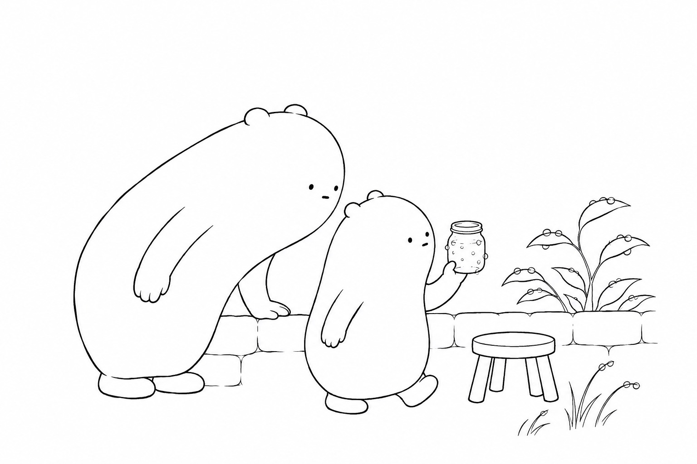

Today’s poem

The Dew Watch
Little Wonderer said, “I will catch the dew fall!”
So out went a jar and a stool by the wall.
“It drips from the stars every night,” came the cry,
“and I’ll catch every drop as it falls from the sky!”
Big Wonderer smiled and left on the porch light.
The little one stared at the stars half the night.
But the sky never dripped, not a drop, not a pour,
and the little one nodded and drifted to snore.
At dawn, the grass glittered. The jar was wet too,
but the drops were OUTSIDE it, a jacket of dew!
“How did they get on it, if none of them fell?”
asked the little one, peeking inside the dry shell.
“It never fell down,” said the big one. “It grew,
when the air touched the cold glass and gave it some dew.”
So now every night there’s a jar by the wall,
upside down, catching dew that won’t ever fall.